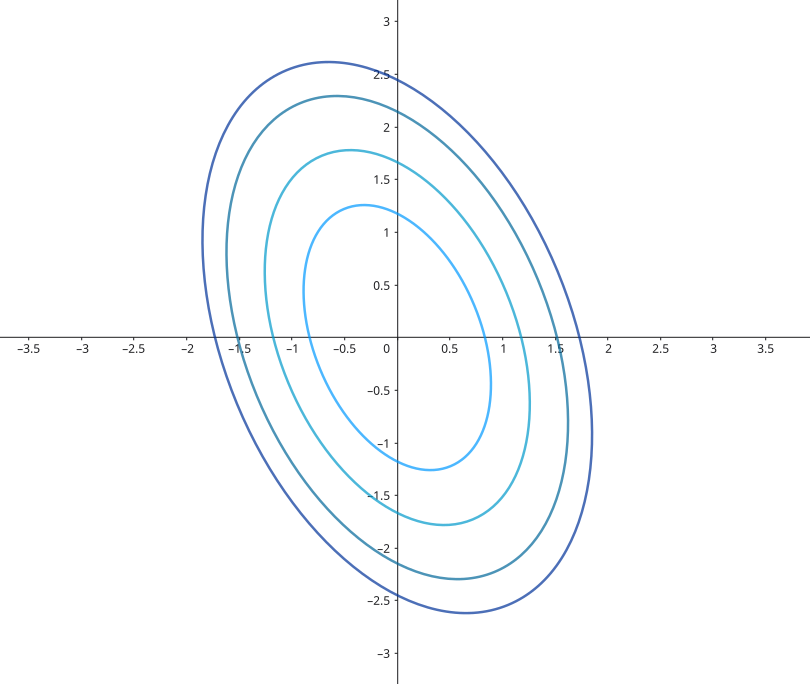
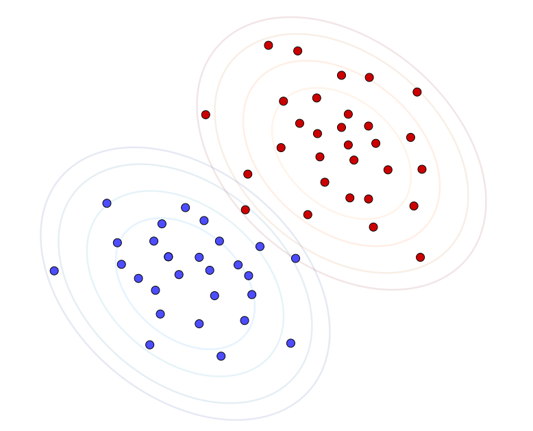
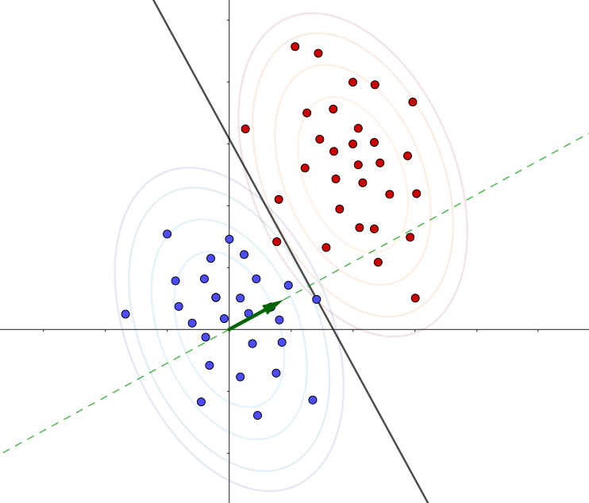
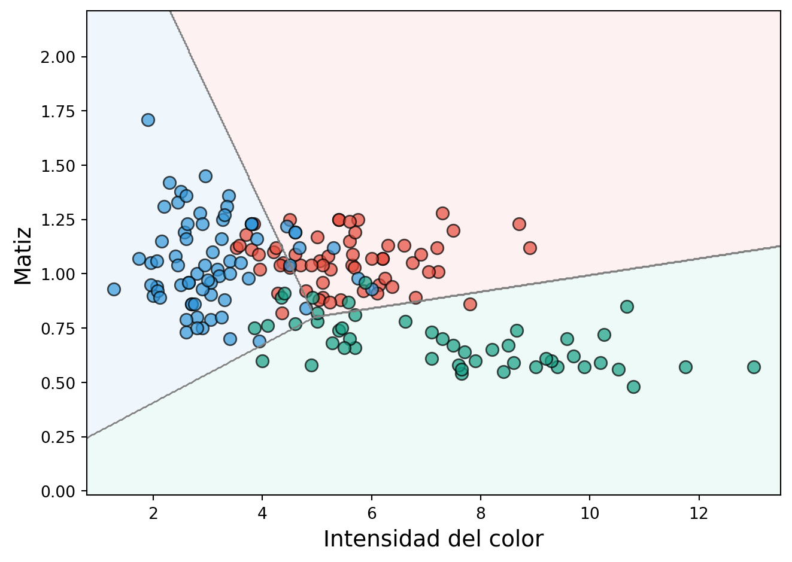
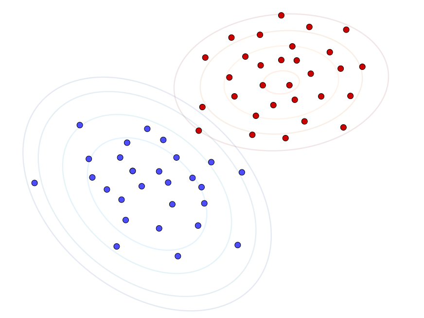
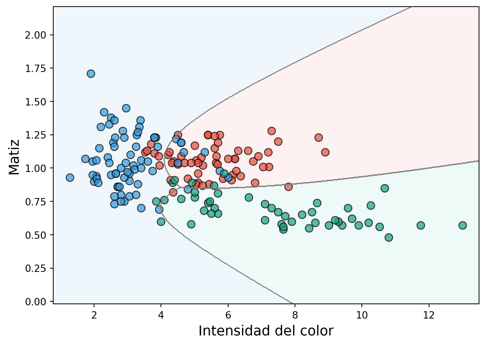
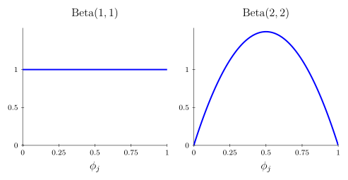

viewof mu1 = Inputs.range([-2, 2], {
step: 0.1,
label: "μ₁:",
value: 0
})
viewof mu2 = Inputs.range([-2, 2], {
step: 0.1,
label: "μ₂:",
value: 0
})
// Matriz Σ
viewof sigma11 = Inputs.range([0.1, 2], {step: 0.1, label: "σ₁₁:", value: 1})
viewof sigma12 = Inputs.range([-1, 1], {step: 0.1, label: "σ₁₂=σ₂₁:", value: 0})
viewof sigma22 = Inputs.range([0.1, 2], {step: 0.1, label: "σ₂₂:", value: 1})Modelos generativos para clasificación
Capítulo 3 - Sección 1
$$
$$
Última actualización: 03/11/2026
En el capítulo anterior hemos trabajado con métodos que modelan la distribución condicional \(p(y\mid {\bf x}; \boldsymbol{\theta})\). Como caso general, los modelos lineales generalizados asumen dicha distribución en una familia exponencial con parámetro natural \(\boldsymbol{\eta}=\boldsymbol{\Theta}^\top{\bf x}\).
En este capítulo adoptaremos un enfoque diferente. Dado un problema de clasificación \(Y|{\bf X}\), el propósito será modelar la distribución conjunta \[ p({\bf x},y):=p({\bf x}\mid y)\, p(y), \] donde \(p({\bf x}\mid y)\) es la distribución condicional de las variables predictoras para la clase \(Y=y\), y \(p(y)\) es la distribución de probabilidad a priori de dicha clase. Esto conduce a modelos generativos que describen el proceso de generación de los datos. No obstante, para fines de clasificación, lo que nos interesa es determinar la clase más probable dada una observación. En este contexto, la regla de Bayes nos indica que \[ p(y\mid{\bf x})=\frac{p({\bf x}\mid y)\,p(y)}{p({\bf x})}. \]
Observar que, al momento de clasificar una observación \({\bf x}\), es suficiente comparar los numeradores \(p({\bf x}\mid y)\,p(y)\) para cada clase, puesto que \(p({\bf x})\) actúa como una constante de normalización que no depende de \(y\). De esta forma, la regla de decisión bayesiana es \[ h^\star({\bf x}):=\arg\max_{y} p({\bf x}\mid y)\,p(y). \]
Esta regla es óptima, en el sentido de que minimiza la probabilidad de clasificar incorrectamente una nueva observación. Sin embargo, no es computable: requiere conocer \(p({\bf x}\mid y)\) y \(p(y)\), que son justamente las distribuciones desconocidas. Los modelos que siguen son distintas maneras de aproximar \(h^\star\), cada una a partir de supuestos sobre \(p({\bf x}\mid y)\); denotaremos con \(G\) la regla de decisión que resulta de cada uno de ellos.
En esta sección estudiaremos tres ejemplos representativos de modelos generativos utilizados en clasificación: los modelos discriminantes gaussianos (LDA y QDA) y Naive Bayes.
📄 Notación
Durante esta sección consideramos un conjunto de datos de entrenamiento \(\{({\bf x}_i,y_i)\}_{i=1}^n\), con \({\bf x}_i\in\mathbb{R}^p\). Para las deducciones principales asumimos un problema de clasificación binaria, con \(Y\in\{0,1\}\); los modelos presentados se extienden de forma natural a problemas multiclase.
I │ La Normal multivariada
Es importante remarcar que \(p({\bf x}\mid y)\) implica trabajar con distribuciones multivariadas de \({\bf X}\in\mathbb{R}^p\). En particular, la distribución Normal multivariada será la base para los modelos discriminantes gaussianos que estudiaremos en esta sección.
Definición 3.1.1 (Distribución Normal multivariada). Una variable aleatoria \({\bf X}\in\mathbb{R}^p\) se distribuye normal multivariada con media \(\boldsymbol{\mu}\in\mathbb{R}^p\) y matriz de covarianza \(\Sigma\in\mathbf{S}_{++}^p\), y denotamos \[ {\bf X}\sim \mathcal{N}(\boldsymbol{\mu},\Sigma), \]
si su función de densidad está dada por
\[ p({\bf x}\mid\boldsymbol{\mu},\Sigma)=\frac{1}{(2\pi)^{p/2}|\Sigma|^{1/2}}\exp\left\{-\frac{1}{2}({\bf x}-\boldsymbol{\mu})^\top\Sigma^{-1}({\bf x}-\boldsymbol{\mu})\right\}. \]
En el siguiente gráfico interactivo, se puede visualizar la densidad de una normal bivariada con parámetros \[ \boldsymbol{\mu}=\begin{pmatrix} \mu_1 \\ \mu_2 \end{pmatrix} \qquad \Sigma=\begin{pmatrix} \sigma_{11} & \sigma_{12} \\ \sigma_{21} & \sigma_{22} \end{pmatrix} \]
Figura 3.1.1: Función de densidad de una distribución normal bivariada.
Ejemplo 3.1.2 Curvas de nivel de una normal bivariada
Sea \({\bf X}\in\mathbb{R}^2\), \({\bf X}\sim\mathcal{N}(\boldsymbol{\mu},\Sigma)\), con \[ \boldsymbol{\mu}=\begin{pmatrix} 0\\ 0 \end{pmatrix} \qquad \Sigma=\begin{pmatrix} 1 & 0.5 \\ 0.5 & 2 \end{pmatrix}. \tag{3.1.1} \]
La función de densidad es \[ \begin{align*} p({\bf x})&=\frac{1}{2\pi\sqrt{\frac{7}{4}}}\exp\left\{-\frac{1}{2}(x_1,x_2)^\top\begin{pmatrix}\frac{8}{7} & -\frac{2}{7} \\ -\frac{2}{7} & \frac{4}{7} \end{pmatrix} (x_1,x_2)\right\} \\[3pt] &=\frac{1}{\sqrt{7}\pi}\exp\left\{-\frac{1}{2}\left(\frac{8}{7}x_1^2-\frac{4}{7}x_1x_2+\frac{4}{7}x_2^2\right)\right\} \end{align*}, \]
y, por lo tanto, las curvas de nivel son elipses de ecuación \[ 2x_1^2-x_1x_2+x_2^2 = \text{cte}. \]

Veamos a continuación cómo obtener los estimadores MLE de los parámetros \(\boldsymbol{\mu}\) y \(\Sigma\) a partir de un conjunto de datos \(\{{\bf x}_1,\ldots,{\bf x}_n\}\). La función de log-verosimilitud es \[ \ell(\boldsymbol{\mu},\Sigma)=\sum_{i=1}^n\left(-\frac{p}{2}\log(2\pi)-\frac{1}{2}\log|\Sigma|-\frac{1}{2}({\bf x}_i-\boldsymbol{\mu})^\top\Sigma^{-1}({\bf x}_i-\boldsymbol{\mu})\right) \]
Maximizaremos por etapas: primero en \(\boldsymbol{\mu}\) con \(\Sigma\) fijo, y luego en \(\Sigma\). Esto es válido porque maximizar sobre el par equivale a maximizar por etapas, esto es \[ \sup_{\boldsymbol{\mu},\,\Sigma}\;\ell(\boldsymbol{\mu},\Sigma)=\sup_{\Sigma}\;\left(\sup_{\boldsymbol{\mu}}\;\ell(\boldsymbol{\mu},\Sigma)\right), \]
identidad que no requiere ninguna hipótesis sobre \(\ell\). Además, si los supremos se alcanzan, pueden reemplazarse por máximos. Por lo tanto, para garantizar la optimalidad global, debemos resolver globalmente cada etapa y verificar que los máximos se alcancen. Esta estrategia resulta particularmente útil porque \(\ell\) no es cóncava en \((\boldsymbol\mu,\Sigma)\), por lo que no podemos concluir que un punto estacionario sea un máximo global.
Otra alternativa consiste en reformular el problema utilizando los parámetros naturales de la distribución normal multivariada, aprovechando su estructura de familia exponencial. En esta parametrización, la log-verosimilitud es cóncava, lo que proporciona una vía alternativa para justificar la optimalidad global. No desarrollaremos este enfoque aquí, ya que el procedimiento de optimización por etapas resulta más directo para este problema.
Manteniendo entonces \(\Sigma\) fijo, la primera etapa es el problema \[ \begin{array}{ll} \text{maximizar } & -\displaystyle\frac{1}{2}\displaystyle\sum_{i=1}^n({\bf x}_i-\boldsymbol{\mu})^\top\Sigma^{-1}({\bf x}_i -\boldsymbol{\mu}). \end{array} \]
La función objetivo es cuadrática con Hessiana \(-n\Sigma^{-1}\prec 0\), de manera que es estrictamente cóncava y su máximo queda caracterizado por la condición de optimalidad: \[ \begin{align} \sum_{i=1}^n\Sigma^{-1}({\bf x}_i-\hat{\boldsymbol{\mu}})&=0\\ \Sigma^{-1}\left(\sum_{i=1}^n{\bf x}_i-n\hat{\boldsymbol{\mu}}\right) &=0 \\ \hat{\boldsymbol{\mu}} &=\frac{1}{n}\sum_{i=1}^n{\bf x}_i. \end{align} \]
Observar que \(\hat{\boldsymbol{\mu}}\) no depende de \(\Sigma\): el máximo de la primera etapa es el mismo cualquiera sea \(\Sigma\). La segunda etapa consiste entonces en maximizar \(\ell(\hat{\boldsymbol{\mu}},\Sigma)\), esto es, el problema \[ \begin{array}{ll} \text{maximizar } & -\displaystyle\frac{n}{2}\log|\Sigma|-\frac{1}{2}\sum_{i=1}^n({\bf x}_i-\hat{\boldsymbol{\mu}})^\top\Sigma^{-1}({\bf x}_i-\hat{\boldsymbol{\mu}}). \end{array} \tag{3.1.2} \]
Es conveniente derivar la función objetivo en (3.1.2) respecto de \(\Sigma^{-1}\) y tener en cuenta algunos resultados importantes de análisis matricial: \[ \nabla_{A^{-1}} \log |A|=-A,\qquad\nabla_A\text{tr}(BA)=B^\top. \]
En particular, para poder usar la segunda expresión, hay que tener en cuenta que \[ ({\bf x}-\hat{\boldsymbol{\mu}})^\top\Sigma^{-1}({\bf x}-\hat{\boldsymbol{\mu}})=\text{tr}(({\bf x}-\hat{\boldsymbol{\mu}})^\top\Sigma^{-1}({\bf x}-\hat{\boldsymbol{\mu}}))=\text{tr}(({\bf x}-\hat{\boldsymbol{\mu}})({\bf x}-\hat{\boldsymbol{\mu}})^\top\Sigma^{-1}). \]
Resulta: \[ \begin{align} \frac{n}{2}\hat{\Sigma}-\frac{1}{2}\sum_{i=1}^n({\bf x}_i-\hat{\boldsymbol{\mu}})({\bf x}_i-\hat{\boldsymbol{\mu}})^\top &= \mathbf{0}\\ \hat{\Sigma} &= \frac{1}{n}\sum_{i=1}^n({\bf x}_i-\hat{\boldsymbol{\mu}})({\bf x}_i-\hat{\boldsymbol{\mu}})^\top. \end{align} \]
Si se escribe \(-\log|\Sigma|=\log|\Sigma^{-1}|\), la función objetivo queda expresada enteramente en términos de \(\Sigma^{-1}\) y resulta estrictamente cóncava: \(\log|\Sigma^{-1}|\) lo es y la traza es lineal. Por lo tanto, \(\hat{\Sigma}\) es el máximo de la segunda etapa y, en consecuencia, \((\hat{\boldsymbol{\mu}},\hat{\Sigma})\) es el máximo global de \(\ell\).
Marginales y condicionales
Antes de pasar a los modelos de clasificación, veamos un resultado útil. Supongamos \[ {\bf X}= \begin{pmatrix} {\bf X}_1 \\ {\bf X}_2 \end{pmatrix}, \] donde \({\bf X}_1 \in \mathbb{R}^r\), \({\bf X}_2 \in \mathbb{R}^s\) y \({\bf X}\in \mathbb{R}^{r+s}\), tal que \({\bf X}\sim \mathcal{N}(\boldsymbol{\mu}, \Sigma)\) con \[ \boldsymbol{\mu}= \begin{pmatrix} \boldsymbol{\mu}_1 \\ \boldsymbol{\mu}_2 \end{pmatrix}, \qquad \Sigma = \begin{pmatrix} \Sigma_{11} & \Sigma_{12} \\ \Sigma_{21} & \Sigma_{22} \end{pmatrix}. \]
Aquí \(\boldsymbol{\mu}_1 \in \mathbb{R}^r\), \(\boldsymbol{\mu}_2 \in \mathbb{R}^s\), \(\Sigma_{11} \in \mathbb{R}^{r \times r}\), \(\Sigma_{22} \in \mathbb{R}^{s \times s}\), \(\Sigma_{12} \in \mathbb{R}^{r \times s}\) y \(\Sigma_{21} \in \mathbb{R}^{s \times r}\). Notar que, al ser \(\Sigma\) simétrica, se cumple \(\Sigma_{12} = \Sigma_{21}^\top\).
Teorema 3.1.3 (Marginales y condicionales de una normal multivariada). Bajo las condiciones anteriores, se verifica \[ {\bf X}_1 \sim \mathcal{N}(\boldsymbol{\mu}_1, \Sigma_{11}), \] \[ {\bf X}_1 \mid {\bf X}_2={\bf x}_2 \sim \mathcal{N}(\boldsymbol{\mu}_{1 \mid 2}, \Sigma_{1 \mid 2}), \] donde \[ \boldsymbol{\mu}_{1 \mid 2} = \boldsymbol{\mu}_1 + \Sigma_{12} \Sigma_{22}^{-1} ({\bf x}_2 - \boldsymbol{\mu}_2), \qquad \Sigma_{1 \mid 2} = \Sigma_{11} - \Sigma_{12} \Sigma_{22}^{-1} \Sigma_{21}. \]
Enunciamos el resultado sin demostración; la deducción completa puede consultarse en (Bishop 2006). La expresión de la condicional tiene una lectura intuitiva: observar \({\bf X}_2\) corrige la media de \({\bf X}_1\) en una cantidad proporcional al desvío \({\bf x}_2-\boldsymbol{\mu}_2\), con factor de proporcionalidad \(\Sigma_{12}\Sigma_{22}^{-1}\), y reduce su covarianza en \(\Sigma_{12} \Sigma_{22}^{-1} \Sigma_{21}\). En particular, si \(\Sigma_{12}=0\) los bloques son independientes y condicionar no aporta información. (✏1)
II │ Análisis discriminante lineal (LDA)
En este modelo, asumiremos que \(p({\bf x}\mid y)\) es una distribución normal multivariada, con matriz de covarianza \(\Sigma\) constante para todas las clases.
Supuestos del modelo
\[ \begin{array}{c} Y\sim\text{Bernoulli}(\varphi) \\[2pt] {\bf X}\mid Y=0\sim\mathcal{N}(\boldsymbol{\mu}_0,\Sigma) \\[2pt] {\bf X}\mid Y=1\sim\mathcal{N}(\boldsymbol{\mu}_1,\Sigma) \\[2pt] \end{array} \]

Así, las distribuciones de este modelo son: \[ p(y)=\varphi^y(1-\varphi)^{1-y}, \] \[ p({\bf x}\mid y=0)=\frac{1}{(2\pi)^{p/2}|\Sigma|^{1/2}}\exp\left\{-\frac{1}{2}({\bf x}-\boldsymbol{\mu}_0)^\top\Sigma^{-1}({\bf x}-\boldsymbol{\mu}_0)\right\}, \] \[ p({\bf x}\mid y=1)=\frac{1}{(2\pi)^{p/2}|\Sigma|^{1/2}}\exp\left\{-\frac{1}{2}({\bf x}-\boldsymbol{\mu}_1)^\top\Sigma^{-1}({\bf x}-\boldsymbol{\mu}_1)\right\}. \]
Importante
La suposición \(Y\sim\text{Bernoulli}(\varphi)\) implica \(p(y=1)=\varphi\). Ahora bien, ¿qué podemos decir sobre \(p(y=1\mid{\bf x})\)? Por regla de Bayes, resulta \[ \begin{align*} \frac{p(y=1\mid {\bf x})}{p(y=0\mid{\bf x})}&=\frac{p({\bf x}\mid y=1)\,p(y=1)}{p({\bf x}\mid y=0)\,p(y=0)} \\[3pt] &=\frac{\varphi}{1-\varphi}\exp\left\{-\frac{1}{2}({\bf x}-\boldsymbol{\mu}_1)^\top\Sigma^{-1}({\bf x}-\boldsymbol{\mu}_1)+\frac{1}{2}({\bf x}-\boldsymbol{\mu}_0)^\top\Sigma^{-1}({\bf x}-\boldsymbol{\mu}_0)\right\} \\[3pt] &=\frac{\varphi}{1-\varphi}\exp\left\{{\bf x}^\top\Sigma^{-1}(\boldsymbol{\mu}_1-\boldsymbol{\mu}_0)-\frac{1}{2}(\boldsymbol{\mu}_1^\top\Sigma^{-1}\boldsymbol{\mu}_1-\boldsymbol{\mu}_0^\top\Sigma^{-1}\boldsymbol{\mu}_0)\right\}. \end{align*} \]
Denotando \[ \theta_0=\log\left(\frac{\varphi}{1-\varphi}\right)-\frac{1}{2}(\boldsymbol{\mu}_1^\top\Sigma^{-1}\boldsymbol{\mu}_1-\boldsymbol{\mu}_0^\top\Sigma^{-1}\boldsymbol{\mu}_0), \] \[ \boldsymbol{\theta}=\Sigma^{-1}(\boldsymbol{\mu}_1-\boldsymbol{\mu}_0), \] podemos escribir \[ \begin{align*} \frac{p(y=1\mid{\bf x})}{p(y=0\mid {\bf x})}&=\exp\{\boldsymbol{\theta}^\top{\bf x}+\theta_0\}\\ p(y=1\mid{\bf x})&=\frac{e^{\boldsymbol{\theta}^\top{\bf x}+\theta_0}}{1+e^{\boldsymbol{\theta}^\top{\bf x}+\theta_0}}. \end{align*} \]
En consecuencia, bajo el modelo LDA, la distribución condicional \(p(y\mid{\bf x})\) sigue necesariamente una función logística. Sin embargo, lo contrario no es cierto: asumir \(p(y\mid{\bf x})\) logística no implica que \(p({\bf x}\mid y)\) es gaussiana.
Esto muestra que LDA hace suposiciones más fuertes que la regresión logística. Si estas suposiciones son correctas, LDA será un mejor modelo.
Por otro lado, al hacer suposiciones más débiles, la regresión logística es menos sensible a suposiciones de modelado incorrectas. De hecho, hay otras suposiciones sobre \({\bf X}\mid Y\) que conducen a la misma forma funcional para \(p(y\mid {\bf x})\): el caso \({\bf X}\mid Y=y\sim\text{Poisson}(\lambda_y)\) se analizará en las actividades conceptuales (✏3). Allí, puede esperarse que la regresión logística funcione mejor que LDA.
Regla de decisión
Como hemos visto al comienzo de esta sección, la regla de Bayes es el vínculo entre el modelo generativo y la regla de decisión utilizada para clasificar nuevas observaciones, de manera que se asigna \({\bf x}\) a la clase que maximiza \[ p(y\mid{\bf x})\propto p({\bf x}\mid y)\,p(y). \]
Otro punto de vista es el cociente de verosimilitudes, que determina el criterio de decisión de la siguiente manera: \[ h^\star({\bf x})=1\quad\text{si}\quad \log\frac{p(y=1\mid {\bf x})}{p(y=0\mid {\bf x})}>0. \tag{3.1.3} \]
Apliquemos este enfoque para construir la regla de decisión \(G\) del modelo LDA. La frontera de decisión es el conjunto de puntos en los que ambas clases resultan igualmente probables, esto es, \(\log p(y=1\mid{\bf x})=\log p(y=0\mid{\bf x})\). Reemplazando las densidades del modelo en la proporcionalidad anterior y simplificando los términos comunes a ambas clases, resulta \[ \begin{align*} -\frac{1}{2}({\bf x}-\boldsymbol{\mu}_1)^\top\Sigma^{-1}({\bf x}-\boldsymbol{\mu}_1) + \log p(y=1) &= -\frac{1}{2}({\bf x}-\boldsymbol{\mu}_0)^\top\Sigma^{-1}({\bf x}-\boldsymbol{\mu}_0) + \log p(y=0) \\[3pt] ({\bf x}-\boldsymbol{\mu}_0)^\top \Sigma^{-1}({\bf x}-\boldsymbol{\mu}_0)-({\bf x}-\boldsymbol{\mu}_1)^\top \Sigma^{-1}({\bf x}-\boldsymbol{\mu}_1) &= 2\log\frac{p(y=0)}{p(y=1)} \\[3pt] \underbrace{(\boldsymbol{\mu}_1-\boldsymbol{\mu}_0)^\top\Sigma^{-1}}_{\boldsymbol{\beta}^\top}{\bf x}&=\underbrace{\log\frac{p(y=0)}{p(y=1)}+\frac{1}{2}\left(\boldsymbol{\mu}_1^\top\Sigma^{-1}\boldsymbol{\mu}_1-\boldsymbol{\mu}_0^\top\Sigma^{-1}\boldsymbol{\mu}_0\right)}_{-\beta_0}. \end{align*} \]
Esto es un hiperplano de la forma \(f({\bf x})=\boldsymbol{\beta}^\top{\bf x}+\beta_0=0\), con vector normal \[ \boldsymbol{\beta}=\Sigma^{-1}(\boldsymbol{\mu}_1-\boldsymbol{\mu}_0). \]

Para concluir, haremos énfasis en la regla de clasificación para un problema multiclase:
\[ \begin{align*} h^\star({\bf x}) &= \arg\max_{y} p(y\mid {\bf x}) \\ &=\arg\max_{y} p({\bf x}\mid y)\,p(y) \\ & = \arg\max_{y} \left[\log p({\bf x}\mid y)+\log p(y)\right] \end{align*} \]
Además, denotamos \(\pi_y:=\mathbb{P}\{Y=y\}\) las probabilidades a priori de cada clase, que en el caso binario se reducen a \(\pi_1=\varphi\) y \(\pi_0=1-\varphi\). De esta manera, y tras eliminar los términos constantes que no dependen de \({\bf x}\), se obtiene el siguiente resultado.
Para un problema de clasificación multiclase, la regla de decisión del modelo LDA es \[ G({\bf x})=\arg\max_{y}\left[-\frac{1}{2}({\bf x}-\boldsymbol{\mu}_y)^\top\Sigma^{-1}({\bf x}-\boldsymbol{\mu}_y)+\log\pi_y\right]. \]
Estimación por máxima verosimilitud
Los parámetros del modelo son \(\varphi\in\mathbb{R}\), \(\boldsymbol{\mu}_0,\boldsymbol{\mu}_1\in\mathbb{R}^p\) y \(\Sigma\in\mathbf{S}_{++}^p\). La estimación por máxima verosimilitud resulta de maximizar \[ \begin{align} \ell(\varphi,\boldsymbol{\mu}_0,\boldsymbol{\mu}_1,\Sigma)&=\sum_{i=1}^n\log p({\bf x}_i,y_i\mid\varphi,\boldsymbol{\mu}_0,\boldsymbol{\mu}_1,\Sigma) \\ & = \sum_{i=1}^n\log\left[p({\bf x}_i\mid y_i;\boldsymbol{\mu}_{y_i},\Sigma)\,p(y_i\mid\varphi)\right]\\ & = \sum_{i=1}^n\log p({\bf x}_i\mid y_i;\boldsymbol{\mu}_{y_i},\Sigma) + \sum_{i=1}^n\log p(y_i\mid\varphi). \end{align} \tag{3.1.4} \]
Obtengamos en primer lugar el MLE de \(\varphi\). Este es el punto óptimo de \[ \begin{array}{ll} \text{maximizar } & \displaystyle\sum_{i=1}^n\log p(y_i\mid\varphi), \end{array} \]
cuya función objetivo es la función de verosimilitud de \(Y\sim\text{Bernoulli}(\varphi)\). El MLE resulta \[ \hat{\varphi}=\frac{1}{n}\sum_{i=1}^n y_i=\frac{1}{n}\sum_{i=1}^n\mathbf{1}\{y_i=1\}. \]
Ahora bien, si fijamos \(\Sigma\) en (3.1.4), podemos estimar \(\boldsymbol{\mu}_y\), para \(y\in\{0,1\}\), resolviendo el problema
\[ \begin{array}{ll} \text{maximizar } & -\displaystyle\frac{1}{2}\sum_{i:y_i=y}({\bf x}_i-\boldsymbol{\mu}_y)^\top\Sigma^{-1}({\bf x}_i-\boldsymbol{\mu}_y) \end{array} \tag{3.1.5} \]
La función objetivo en (3.1.5) es claramente cóncava, ya que \(\Sigma\succ 0\) implica \(\Sigma^{-1}\succ 0\). Luego, al igualar el gradiente a cero obtenemos \[ \hat{\boldsymbol{\mu}}_y = \frac{\sum_{i=1}^n\mathbf{1}\{y_i=y\}{\bf x}_i}{\sum_{i=1}^n\mathbf{1}\{y_i=y\}}, \tag{3.1.6} \]
lo cual es la media muestral de la clase \(Y=y\). De hecho, si denotamos con \(n_0\) y \(n_1\) la cantidad de observaciones con etiqueta \(y=0\) e \(y=1\), respectivamente, (3.1.6) se puede escribir \[ \hat{\boldsymbol{\mu}}_0=\frac{1}{n_0}\sum_{i:y_i=0}{\bf x}_i,\qquad \hat{\boldsymbol{\mu}}_1=\frac{1}{n_1}\sum_{i:y_i=1}{\bf x}_i. \]
Observar que \(\hat{\boldsymbol{\mu}}_y\) no depende de \(\Sigma\): como en la deducción anterior, el máximo de la primera etapa es el mismo cualquiera sea \(\Sigma\). La segunda etapa consiste entonces en reemplazar (3.1.6) en (3.1.4), lo que da el problema
\[ \begin{array}{ll} \text{maximizar } & -\displaystyle\frac{1}{2}\sum_{i=1}^n({\bf x}_i-\hat{\boldsymbol{\mu}}_{y_i})^\top\Sigma^{-1}({\bf x}_i-\hat{\boldsymbol{\mu}}_{y_i})-\frac{n}{2}\log |\Sigma|. \end{array} \tag{3.1.7} \]
Procediendo como en la deducción del MLE de la normal multivariada, el problema (3.1.7) se reescribe como \[ \begin{array}{ll} \text{maximizar } & \displaystyle\frac{n}{2}\log|\Sigma^{-1}|-\frac{1}{2}\text{tr}\left[\Sigma^{-1}\sum_{i=1}^n({\bf x}_i-\hat{\boldsymbol{\mu}}_{y_i})({\bf x}_i-\hat{\boldsymbol{\mu}}_{y_i})^\top\right] \end{array} \tag{3.1.8} \]
Tomando como variable de optimización a \(\Sigma^{-1}\), la función objetivo es estrictamente cóncava y, al igualar el gradiente a cero, resulta \[ \begin{align*} \frac{n}{2}\hat{\Sigma}-\frac{1}{2}\sum_{i=1}^n({\bf x}_i-\hat{\boldsymbol{\mu}}_{y_i})({\bf x}_i-\hat{\boldsymbol{\mu}}_{y_i})^\top&=0 \\ \hat{\Sigma}&=\frac{1}{n}\sum_{i=1}^n({\bf x}_i-\hat{\boldsymbol{\mu}}_{y_i})({\bf x}_i-\hat{\boldsymbol{\mu}}_{y_i})^\top. \end{align*} \]
Agrupando los términos según la clase, \(\hat{\Sigma}\) resulta un promedio ponderado de las covarianzas muestrales de cada clase, \[ \hat{\Sigma}=\frac{n_0}{n}\hat{\Sigma}_0+\frac{n_1}{n}\hat{\Sigma}_1,\qquad \hat{\Sigma}_y:=\frac{1}{n_y}\sum_{i:y_i=y}({\bf x}_i-\hat{\boldsymbol{\mu}}_y)({\bf x}_i-\hat{\boldsymbol{\mu}}_y)^\top, \]
con pesos iguales a las proporciones estimadas de cada clase. Es la expresión que hace visible el supuesto del modelo: una única matriz compartida, estimada combinando la información de todas las clases.
En resumen:
Los MLE de los parámetros del modelo LDA son \[ \hat{\varphi}=\frac{1}{n}\sum_{i=1}^n\mathbf{1}\{y_i=1\}, \] \[ \hat{\boldsymbol{\mu}}_y = \frac{\sum_{i=1}^n\mathbf{1}\{y_i=y\}{\bf x}_i}{\sum_{i=1}^n\mathbf{1}\{y_i=y\}}, \] \[ \hat{\Sigma} =\frac{1}{n}\sum_{i=1}^n({\bf x}_i-\hat{\boldsymbol{\mu}}_{y_i})({\bf x}_i-\hat{\boldsymbol{\mu}}_{y_i})^\top. \]
Ejemplo 3.1.4 LDA en datos simulados de clasificación binaria
Simulamos un conjunto de datos en \(\mathbb{R}^2\) perteneciente a dos clases. Al aplicar LDA, el modelo estima una frontera lineal de decisión que separa ambas regiones.
En este ejemplo utilizamos la implementación LinearDiscriminantAnalysis de scikit-learn. La implementación del método se realizará en las actividades prácticas.
from sklearn.datasets import make_classification
from sklearn.discriminant_analysis import LinearDiscriminantAnalysis as LDA
# Datos:
X, y = make_classification(
n_samples=200, n_features=2, n_redundant=0, n_informative=2,
n_clusters_per_class=1, class_sep=2.0, random_state=42
)
# Modelo:
lda = LDA()
lda.fit(X, y)LinearDiscriminantAnalysis()In a Jupyter environment, please rerun this cell to show the HTML representation or trust the notebook.
On GitHub, the HTML representation is unable to render, please try loading this page with nbviewer.org.
LinearDiscriminantAnalysis()

Ejemplo 3.1.5 LDA en datos de clasificación multiclase
En este ejemplo utilizamos el conjunto de datos wine disponible en scikit-learn, que contiene mediciones químicas de tres tipos de vino. Para visualizar el resultado de la clasificación, consideramos únicamente dos variables predictoras: la intensidad de color y el matiz.
El modelo LDA estima una función discriminante para cada clase, a partir de las cuales se determinan las regiones de decisión y sus correspondientes fronteras lineales.
from sklearn.datasets import load_wine
from sklearn.discriminant_analysis import LinearDiscriminantAnalysis as LDA
# Datos:
wine = load_wine()
X = wine.data[:, [9, 10]]
y = wine.target
target_names = wine.target_names
# Modelo:
lda = LDA()
lda.fit(X, y)LinearDiscriminantAnalysis()In a Jupyter environment, please rerun this cell to show the HTML representation or trust the notebook.
On GitHub, the HTML representation is unable to render, please try loading this page with nbviewer.org.
LinearDiscriminantAnalysis()
III │ Análisis discriminante cuadrático (QDA)
Vamos a extender el modelo LDA, permitiendo diferentes matrices de covarianza para cada clase. Esto proporciona mayor flexibilidad para modelar datos donde las clases tienen diferentes formas y orientaciones.
Supuestos del modelo
\[ \begin{array}{c} Y\sim\text{Bernoulli}(\varphi) \\[2pt] {\bf X}\mid Y=0\sim\mathcal{N}(\boldsymbol{\mu}_0,\Sigma_0) \\[2pt] {\bf X}\mid Y=1\sim\mathcal{N}(\boldsymbol{\mu}_1,\Sigma_1) \\[2pt] \end{array} \]

En este caso, las distribuciones de las clases son \[ p({\bf x}\mid y)=\frac{1}{(2\pi)^{p/2}|\Sigma_0|^{1/2}}\exp\left\{-\frac{1}{2}({\bf x}-\boldsymbol{\mu}_0)^\top\Sigma_y^{-1}({\bf x}-\boldsymbol{\mu}_0)\right\}, \]
Regla de decisión
El no suponer la misma matriz de covarianza para todas las clases tiene las siguientes consecuencias a la hora de determinar la regla de decisión:
El término \(-\log |\Sigma_y|\) no puede ser descartado, pues es diferente para cada clase.
Los términos cuadráticos \({\bf x}^\top\Sigma_y^{-1}{\bf x}\) no se cancelan y, por lo tanto, la frontera de decisión es cuadrática, con término \(-\frac{1}{2}{\bf x}^\top(\Sigma_1^{-1}-\Sigma_0^{-1}){\bf x}\).
Para un problema de clasificación multiclase, la regla de decisión del modelo QDA es \[ G({\bf x})=\arg\max_{y}\left[-\frac{1}{2}\log |\Sigma_y|-\frac{1}{2}({\bf x}-\boldsymbol{\mu}_y)^\top\Sigma_y^{-1}({\bf x}-\boldsymbol{\mu}_y)+\log\pi_y\right]. \]
Estimación por máxima verosimilitud
De manera similar al caso de LDA, se obtienen los estimadores por máxima verosimilitud para los parámetros \(\varphi\in\mathbb{R}\), \(\boldsymbol{\mu}_0, \boldsymbol{\mu}_1\in\mathbb{R}^p\) y \(\Sigma_0, \Sigma_1\in\mathbf{S}_{++}^p\). La derivación queda para las actividades conceptuales (✏4).
Los MLE de los parámetros del modelo QDA son \[ \hat{\varphi}=\frac{1}{n}\sum_{i=1}^n\mathbf{1}\{y_i=1\}, \] \[ \hat{\boldsymbol{\mu}}_y = \frac{\sum_{i=1}^n\mathbf{1}\{y_i=y\}{\bf x}_i}{\sum_{i=1}^n\mathbf{1}\{y_i=y\}}, \] \[\hat{\Sigma}_y = \frac{\sum_{i=1}^{n} \mathbf{1}\{ y_i = y \} (\mathbf{x}_i - \hat{\boldsymbol{\mu}}_{y}) (\mathbf{x}_i - \hat{\boldsymbol{\mu}}_{y})^{\top}} {\sum_{i=1}^{n} \mathbf{1}\{ y_i = y \}}. \]
Ejemplo 3.1.6 QDA en datos de clasificación multiclase
En este ejemplo utilizamos los mismos datos del Ejemplo 3.1.5, pero aplicamos el modelo QDA. A diferencia del LDA, este modelo permite que cada clase tenga su propia matriz de covarianza, lo que da lugar a fronteras de decisión no lineales que se adaptan mejor a la estructura de los datos.
En este ejemplo utilizamos la implementación LinearDiscriminantAnalysis de scikit-learn. La implementación del método se realizará en las actividades prácticas.
from sklearn.datasets import load_wine
from sklearn.discriminant_analysis import QuadraticDiscriminantAnalysis as QDA
# Datos:
wine = load_wine()
X = wine.data[:, [9, 10]]
y = wine.target
target_names = wine.target_names
# Modelo QDA:
qda = QDA()
qda.fit(X, y)QuadraticDiscriminantAnalysis()In a Jupyter environment, please rerun this cell to show the HTML representation or trust the notebook.
On GitHub, the HTML representation is unable to render, please try loading this page with nbviewer.org.
QuadraticDiscriminantAnalysis()

IV │ Naive Bayes
Los métodos de Naive Bayes son un conjunto de algoritmos basados en la aplicación del teorema de Bayes, con la suposición ingenua de independencia condicional entre las características dado el valor de la clase.
Supuesto del modelo
\[ p(x_i\mid y,x_1,\ldots,x_{i-1},x_{i+1},\ldots,x_p)=p(x_i\mid y) \] \[ \forall i=1,\ldots p. \]
Como consecuencia, resulta \[ p({\bf x}\mid y)=\prod_{i=1}^p p(x_i\mid y). \]
Esto permite utilizar diferentes distribuciones univariadas para modelar \(p(x_i\mid y)\). Por lo tanto, no existe un solo tipo de clasificador Naive Bayes. Los tipos más comunes son:
NB Gaussiano: útil para trabajar con variables continuas \(X_i\); se asume \(p(x_i|y)\sim\mathcal{N}(\mu_{iy},\sigma_{iy}^2)\).
NB Bernoulli: útil para trabajar con variables discretas booleanas (que asumen dos variables, 0 y 1); se asume \(p(x_i\mid y)\sim\text{Bernoulli}(p_{iy})\).
El uso de Naive Bayes para variables discretas es particularmente útil cuando los predictores representan conteos, como en clasificación de textos, donde cada \(X_i\) indica la presencia de una palabra en un documento o la cantidad de veces que aparece. A continuación, veremos más en detalle esta aplicación.
Clasificación de texto
Sea \({\bf X}\in\mathbb{R}^p\) una variable cuya dimensión coincide con el número de palabras disponibles, a cuyo conjunto nos referiremos como vocabulario, de manera tal que \(X_i\) indica la presencia o ausencia de la \(i\)-ésima palabra en un documento dado. Por ejemplo, la observación \[ {\bf x}=\begin{pmatrix} 1\\ 0\\ 0\\ \vdots\\ 1\\ \vdots \\ 0\end{pmatrix} \qquad \begin{matrix} \text{casa}\\ \text{bicicleta}\\ \text{zapato}\\ \vdots\\ \text{comprar}\\ \vdots \\ \text{perro}\end{matrix} \]
representa un documento que contiene las palabras “casa” y “comprar”, pero no “bicicleta”, “zapato” y “perro”. Ahora bien, si suponemos que el vocabulario está compuesto por 50000 palabras, modelar cada observación \({\bf x}\) por separado para obtener la distribución conjunta da lugar a \(2^{50000}-1\) parámetros. Por tal motivo, el uso de Naive Bayes simplifica mucho el problema; el precio a pagar es la suposición ingenua de independencia: se asume que saber si la \(i\)-ésima palabra aparece o no en un documento no aporta información sobre la presencia o ausencia de la \(j\)-ésima palabra.
Supuesto del modelo
\[ \begin{array}{c} Y\sim\text{Bernoulli}(\varphi) \\[2pt] X_j\mid Y=0\sim\text{Bernoulli}(\phi_{j\mid y=0}) \\[2pt] X_j\mid Y=1\sim\text{Bernoulli}(\phi_{j\mid y=1}) \\[3pt] p({\bf x}_i\mid y_i)=\prod_{j=1}^p p(x_{ij}\mid y_i)\qquad \forall i=1,\ldots, n \end{array} \]
Los parámetros del modelo son \[ \phi_{j\mid y=0}:=p(x_j=1\mid y=0), \] \[ \phi_{j\mid y=1}:=p(x_j=1\mid y=1), \] \[ \varphi:=p(y=1). \]
Para un problema de clasificación multiclase, la regla de decisión del modelo Naive Bayes con características Bernoulli es \[ G({\bf x})=\arg\max_{y} \left(\varphi^{y}(1-\varphi)^{1-y}\prod_{j=1}^p\phi_{j\mid y}^{x_{j}}(1-\phi_{j\mid y})^{1-x_{j}}\right). \]
Dado que estamos trabajando con distribuciones Bernoulli, la maximización de la verosimilitud es sencilla y se deja al lector; los estimadores resultantes son los siguientes:
Los MLE de los parámetros del modelo Naive Bayes con características Bernoulli son \[ \hat{\varphi}=\frac{1}{n}\sum_{i=1}^n\mathbf{1}\{y_i=1\}, \] \[ \hat{\phi}_{j\mid y=0}=\frac{\sum_{i=1}^n\mathbf{1}\{x_{ij}=1\land y_i=0\}}{\sum_{i=1}^n\mathbf{1}\{y_i=0\}} \] \[ \hat{\phi}_{j\mid y=1}=\frac{\sum_{i=1}^n\mathbf{1}\{x_{ij}=1\land y_i=1\}}{\sum_{i=1}^n\mathbf{1}\{y_i=1\}} \]
Con esto hemos desarrollado el método de Naive Bayes para el caso de características binarias \(X_i\). La generalización al caso de variables discretas que toman valores en \(\{1,2,\ldots,k\}\) es directa, mediante el uso de la distribución categórica, aplicable a otros tipos de problemas donde cada variable puede asumir más de dos categorías (clasificación de encuestas, diagnóstico médico, entre otros).
En el caso particular de clasificación de textos, es común modelar las variables como conteos de palabras en lugar de variables binarias de presencia/ausencia. En ese contexto, se utiliza el Naive Bayes Multinomial, que asume independencia entre apariciones de palabras, lo cual permite modelar \(p({\bf x}\mid y)\) mediante la distribución Multinomial. Su desarrollo puede consultarse en (Manning, Raghavan & Schütze 2008), y la comparación empírica entre este modelo y el de Bernoulli presentado aquí, en (McCallum & Nigam 1998).
Importante
El método de Naive Bayes funciona bien en muchos problemas, pero en clasificación de textos puede presentar un problema: si aparece una palabra en un documento que nunca se vio en el conjunto de entrenamiento, los estimadores asociados se anulan y, en consecuencia, la probabilidad a posteriori \(p(y\mid{\bf x})\) queda indeterminada. En efecto, en la expresión \[ p(y=1\mid {\bf x})=\frac{\prod_{j=1}^p p(x_j\mid y=1)\,p(y=1)}{\prod_{j=1}^p p(x_j\mid y=0)\,p(y=0)+\prod_{j=1}^p p(x_j\mid y=1)\,p(y=1)} \] cada uno de los términos \(\prod_{j=1}^pp(x_j\mid y)\) se anula.
Para evitar esto, una herramienta es el suavizado de Laplace, que consiste en sumar un 1 al numerador y, al denominador, el número de valores posibles de la variable. Esto es, para el caso Bernoulli, en el que ese número es 2, resulta \[ \hat{\phi}_{j\mid y=0}=\frac{\sum_{i=1}^n\mathbf{1}\{x_{ij}=1\land y_i=0\}+1}{\sum_{i=1}^n\mathbf{1}\{y_i=0\}+2} \] \[ \hat{\phi}_{j\mid y=1}=\frac{\sum_{i=1}^n\mathbf{1}\{x_{ij}=1\land y_i=1\}+1}{\sum_{i=1}^n\mathbf{1}\{y_i=1\}+2}. \]
Este procedimiento admite una lectura bayesiana. A diferencia de la estimación por máxima verosimilitud, la estimación de máxima a posteriori (MAP) incorpora información previa sobre los parámetros mediante una distribución a priori: \[ \hat{\boldsymbol{\theta}}_{\text{MLE}}=\arg\max_{\boldsymbol{\theta}}p({\bf x}\mid\boldsymbol{\theta}),\qquad \hat{\boldsymbol{\theta}}_{\text{MAP}}=\arg\max_{\boldsymbol{\theta}}p({\bf x}\mid\boldsymbol{\theta})\,p(\boldsymbol{\theta}). \]
En el caso Bernoulli se asume una distribución Beta como prior, \(\phi_j\sim\text{Beta}(\alpha,\beta)\). Por conjugación, la distribución a posteriori también es Beta: \[ \phi_j\mid\text{datos}\sim\text{Beta}\big(n_{jy}+\alpha,\;n_y-n_{jy}+\beta\big), \] donde \(n_{jy}\) es la cantidad de documentos de la clase \(y\) que contienen la palabra \(j\) y \(n_y\) el total de documentos de esa clase.

Existen distintos criterios para obtener una estimación puntual a partir de la posterior; los más usuales son su media, estimador bayesiano bajo pérdida cuadrática, y su moda, el estimador MAP. Dado que la media de \(\text{Beta}(a,b)\) es \(a/(a+b)\) y su moda \((a-1)/(a+b-2)\), se verifica que el suavizado de Laplace admite ambas interpretaciones: es la media a posteriori bajo el prior \(\text{Beta}(1,1)\) (es decir, \(\text{Uniforme}([0,1])\)), y es la moda a posteriori bajo el prior \(\text{Beta}(2,2)\).
En términos de conteos, el prior se lee como observaciones ficticias agregadas a los datos, aunque cuántas depende del criterio: la media agrega \(\alpha\) apariciones y \(\beta\) no apariciones, y la moda, \(\alpha-1\) y \(\beta-1\). En ambas lecturas el suavizado de Laplace agrega exactamente una aparición y una no aparición, que son el \(+1\) del numerador y el \(+2\) del denominador.
Referencias
Bishop, C. M. (2006). Pattern Recognition and Machine Learning. Information Science and Statistics. New York: Springer.
Manning, C. D., Raghavan, P., & Schütze, H. (2008). Text Classification and Naive Bayes. En Introduction to Information Retrieval (pp. 234-265). Cambridge: Cambridge University Press.
McCallum, A., & Nigam, K. (1998). A Comparison of Event Models for Naive Bayes Text Classification. En AAAI-98 Workshop on Learning for Text Categorization (pp. 41-48).
Ng, A. Apuntes del curso Stanford CS229: Machine Learning. Disponible aquí.